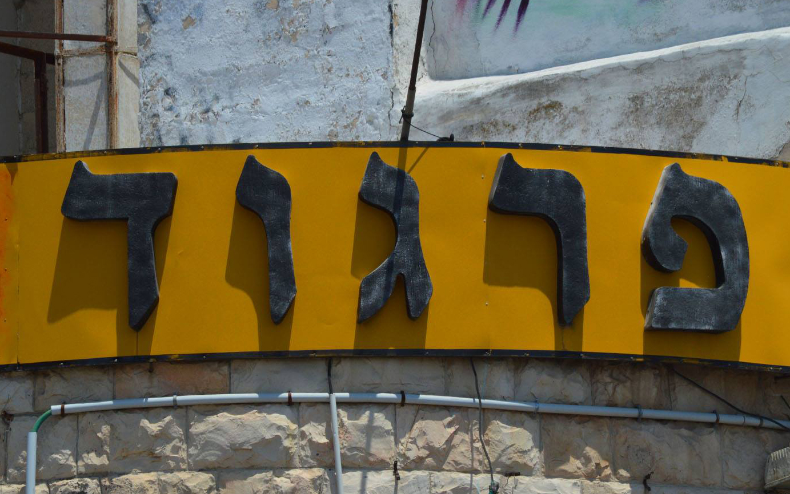
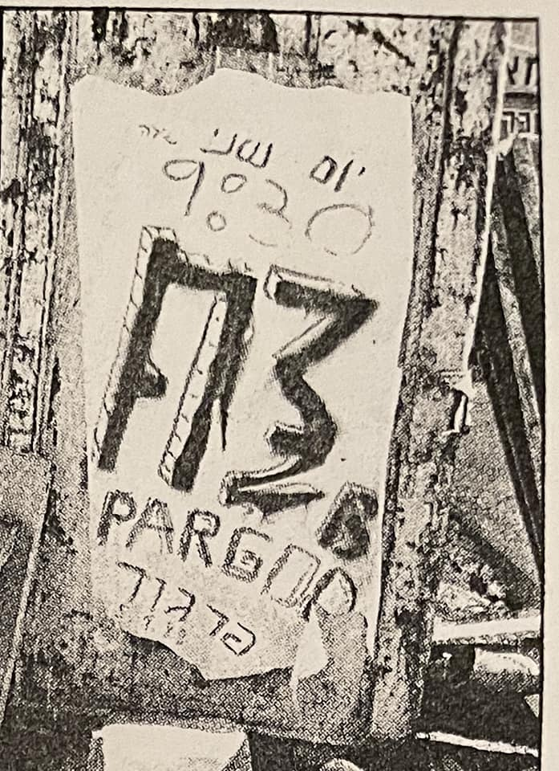
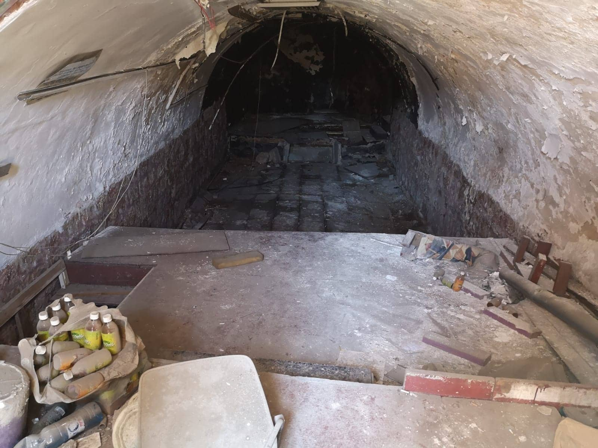

תיאטרון פרגוד
מקום

הפרגוד הוקם במקור כסדנת תיאטרון בשכונת נחלאות ע"י אריה מארק. הסדנה התפתחה למרכז תרבותי שבו נערכו ערבי שירה, ספרות, הצגות והקרנות סרטים. ב־1972 עבר למבנה הקבוע שלו בפינת הרחובות בצלאל וניסים בכר ובו פעל מאז. בשנות ה־70 התפתחה בו מסורת של ג'אם סשן של נגני ג'אז בימי שישי בצהריים, והופעות של להקות ג'אז תפסו מקום הולך וגדל בין האירועים במקום.
המבנה תואר על ידי אהד פישוף וישי אדר מנושאי המגבעת כבעל חלל הופעות מתחת למפלס הרחוב, דומה לכוך או מערה טחובה, ששימש בעבר כחמאם טורקי.
באמצע שנות ה־80 סצנת הג'אז שקרתה במקום נתפסה מנקודת מבטן של להקות צעירות כנושאי המגבעת כמשהו לא רלוונטי, מאוד אמצע הדרך, ואפילו כמשהו לזלזל בו ולראות בו דוגמה לניוון תרבותי (ישי אדר אמר שהייתה בכך גם "התנשאות ירושלמית" כזאת). הפרגוד לא היה אופציה בכלל מבחינת מקומות להופיע בהם.
הבא בתור הוא כלום - נושאי המגבעת בפרגוד ב-1992

כרזה להופעה של 3ח בפרגוד, 1988
בסוף שנות ה־80 החל לעבוד בניהול המקום גבריאל (גבי) בן־חורין, מלהקת הרוק ישראל, שפתח את שערי המקום בפני להקות רוק נוספות, ביניהן נושאי המגבעת ו־3ח. הוא נפגש עם אהד פישוף במשרד של הפרגוד והזמין את הלהקה להופיע שם. הופעתה הראשונה של הלהקה שם נערכה ב־1987. בנוסף החלו להופיע שם שתי הלהקות האחרות. אנשים שלא הגיעו לשם בעבר התחילו לבוא, והתחיל ולהביא להקות שונות מתל אביב, ופרגוד הפך למקום שהיו בו הופעות רבות. בנוסף גבי בן־חורין השתלט על המשבצת של הג'אם של שישי בצהריים והביא את חבריו מהלהקות האחרות להופיע בו, והקהל שהגיע עבורם התחיל להגיע גם לג'אם בנוסף לקהל המסורתי שלו. חברי נושאי המגבעת, 3ח וישראל נכנסו לג'אם והפכו אותו למשהו מאוד חופשי ולא מסורתי, שגרר כמובן תגובות נזעמות וצעקות מנגני הג'אז והקהל שלהם. התחילו ג'אמים מתחרים של רוק ושל ג'אז. הכוך המיושן פתח את שעריו לכל מה שקרה בעיר, ולהקות חדשות שייצגו סצנות שונות שהתפתחו נכנסו להופיע בתחילת שנות ה־90, כמו להקת המטאל לויטיקוס ולהקת הפאנק סרטן השד. להקות מסצנת הרוק האלטרנטיבי המשיכו להופיע בו כגון דיואלט, הלהקה הניסיונית אחת 2 כזה, ולהקת היפוכונדריה בה הייתה חברה איגי וקסמן. בשנות ה־90 המשיכה סצנת המוזיקה בפרגוד לפרוח, לדוגמה להקת הדג נחש ערכה חלק מההופעות הראשונות שלה במקום.
בסוף ימי נושאי המגבעת, שנת 1992-93, אחרי שהופיעו בכל הארץ, הם עשו מופע שנקרא "הבא בתור הוא כלום", שהיה סוג של מסע הלוויה וקצת חזרה להתחלה, ובאופן סמלי הם גם חזרו לפרגוד. אריה מארק בא לקראתם ונתן להם לעשות חזרות בפרגוד על המופע. הם עשו שלוש הופעות שם, בנוסף לתל אביב וחיפה.
מאז 1975 נוהל מאבק סביב מבנה התיאטרון, כשחברת פרזות השייכת לעירייה, שבבעלותה המבנה, הייתה מעוניינת להרוס אותו ולהקים במקומו בניין דירות. התיאטרון המשיך לפעול בזכות התערבות העירייה עד שנת 2005 בה נסגר התיאטרון על־פי החלטת ביהמ"ש העליון לטובת חברת פרזות. המבנה נותר סגור ונטוש מאז.

חלל ההופעות הנטוש של הפרגוד בשנת 2019